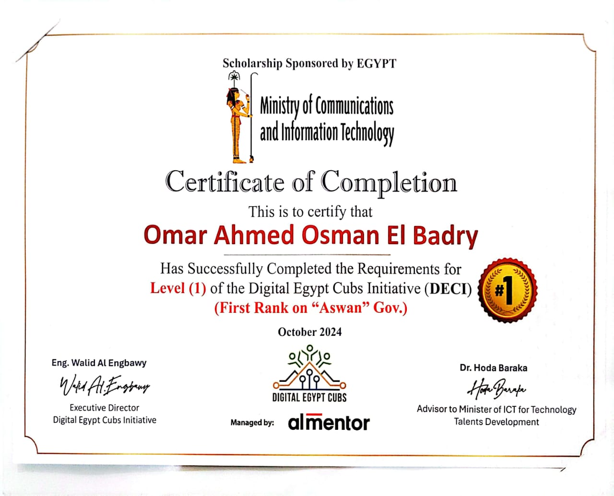
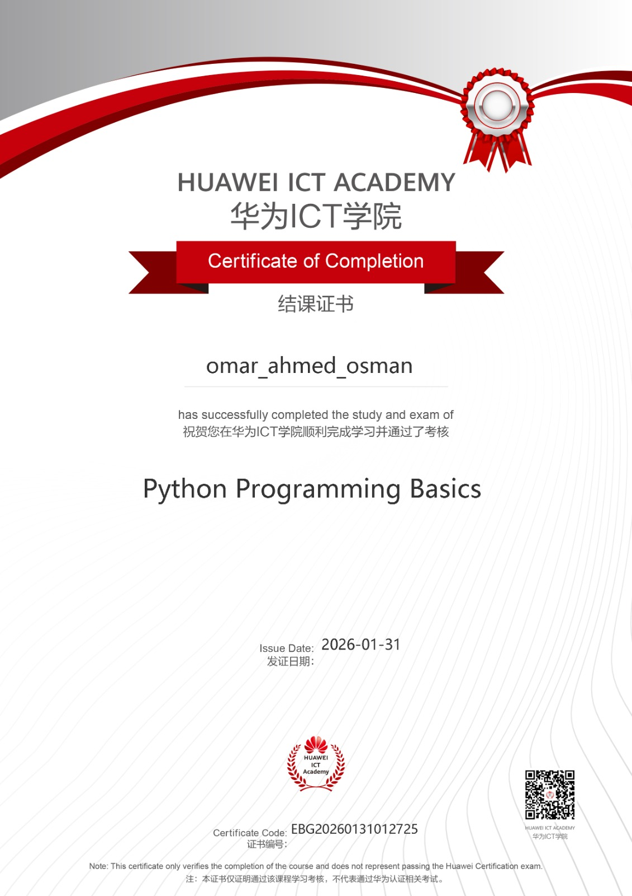

CORE DIRECTION
Data Analysis
PythonAnalysis, automation & problem solving
PandasCleaning, transforming & analyzing datasets
SQLMy main skill goal and current focus
MatplotlibExploring and communicating patterns
I turn raw, messy data into useful insights — while building systems, learning continuously, and improving every day.
$ load_dataset()
$ clean_data()
$ analyze()
$ find_insights()
✓ business_value = True
I'm Omar Ahmed Osman, a high school student who has always enjoyed learning different things and trying new challenges.
My journey started with Arduino. As I grew and explored more areas of technology, I realized that hardware was not the field I wanted to focus on, so I moved toward Data Analysis.
Through the Digital Egypt Cubs Initiative, I developed skills in Python, Data Analysis and other technical areas. The experience also changed me socially: I became more open to people and more confident with presentations and communication.
What attracts me to Data Analysis is the ability to take random, messy information and turn it into something valuable that can support sales, understand customers and improve decisions. My current focus is Data Analysis, especially SQL, and my goal is to earn my first income from this field.
My projects show the transition from electronics and IoT into Python systems and, most recently, Data Analysis.
I analyzed a 2,050-row food-delivery dataset, identified data-quality problems, cleaned missing values and duplicates, fixed data types, handled outliers and inconsistent city values, then explored customer behavior and business performance.
A combined BMS + Registration system for vehicle and driving-license services. It handles registration/login and services such as new vehicle ID, vehicle renewal, new/renewed driving licenses and lost ID requests.
Source in portfolio repo ↗A complete console banking system with registration, account balance inquiry, deposits and withdrawals, plus customer services for creating, activating and updating a Visa.
Source in portfolio repo ↗An AI and IoT concept for early forest-fire detection: analyzing environmental data, identifying the risk level and location, and sending an immediate alert to the nearest firefighting center.
A robot for understanding soil conditions. A robotic arm places a soil-moisture sensor, results can be shown through a mobile application over Bluetooth, and a camera can provide remote visual monitoring.
First rank at the Aswan Governorate level in the first year of the initiative.
Qualified among the top 3 projects in Aswan with the Smart Agriculture Robot.
Participated with the Smart Forest Fire Detection System.
Participated in multiple Fab Lab workshops and events.
Participant in the SeaPerch North Africa Challenge 2023.
Five certificates are highlighted as the main proof of my current learning journey. The rest remain available below as supporting credentials.




I’m open to learning, collaborating, getting feedback and finding opportunities to grow in Data Analysis.